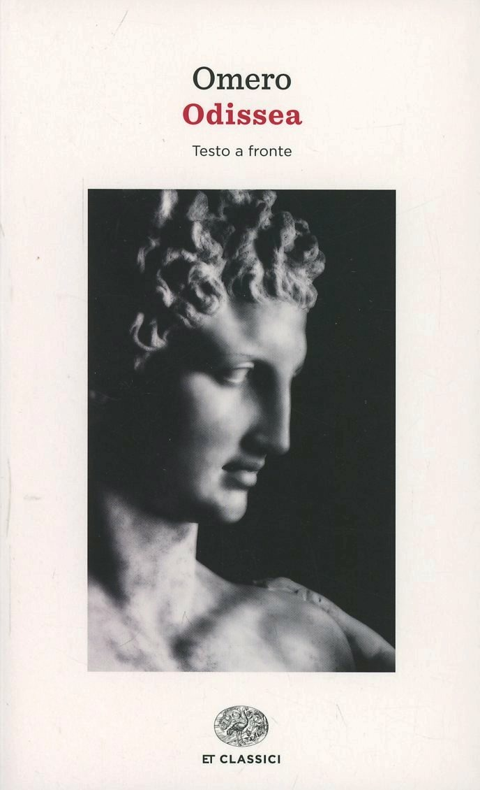

9:30 · 5 OPERE
La belva del pensiero. Un contributo alla filosofia dell'intelletto.
Il filo del discorso
La metafora del pensiero come belva descrive la conoscenza come un incontro rischioso, capace di disorientare e di trasformare chi vi si avventura. Da Hesse al Qoèlet, da Don Chisciotte a Isaia, il discorso difende la ricerca che mette in discussione ciò che si crede già acquisito. L’incontro fra Odisseo e Achille chiude il percorso riaffermando il valore di una vita autonoma, capace di pensare, sperare e amare.
I libri nel discorso

Il lupo della steppa
Note sul riferimento
Copertina: Mondadori · Oscar Moderni · 2024
Copertina autentica controllata visivamente. Edizione di riferimento, non identificata come quella usata nel video.
Titolo e autore annunciati nella citazione di apertura.

Qoèlet (Ecclesiaste)
Note sul riferimento
Copertina: Adelphi, Biblioteca Adelphi 414, 2001
Edizione autonoma del libro biblico, versione e commenti di Guido Ceronetti. Non è una copertina della Bibbia integrale né un’edizione confermata nel video.
Il Qoèlet è nominato prima del richiamo al sapere che accresce il dolore.

Don Chisciotte della Mancia
Identificazione probabile
Note sul riferimento
Copertina: Newton Compton · Vintage · edizione di riferimento
Il cavaliere della Mancia e i mulini identificano il personaggio, senza annuncio del titolo completo.

Isaia
Note sul riferimento
Copertina del volume completo: San Paolo, 2014 · Nuova Versione dai Testi Antichi · edizione di riferimento
Isaia è un libro della Bibbia. L’immagine mostra il volume completo di riferimento San Paolo, non un’edizione autonoma di Isaia né una versione identificata nella citazione.
Isaia è nominato prima dell’esortazione a levare gli occhi e guardare.

Odissea
Note sul riferimento
Copertina: Einaudi · ET Classici · 2014
Copertina autentica controllata visivamente. Edizione di riferimento, non identificata come quella usata nel video.
Odissea e libro XI esplicitamente nominati nel dialogo fra Odisseo e Achille.